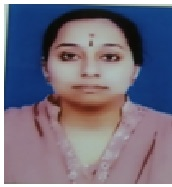

Mrs.T.Vijaya
Lecturer
Department of Commerce
MJPTBCW RESIDENTIAL DEGREE COLLEGE FOR WOMEN
Teaching
T.Vijaya , is a faculty in the department of Commerce with 10 years of teaching experience, (handled different subjects for M.B.A and M.Com)
7 years of Corporate field.
Her areas of specialization are, Finance , Taxation and Banking.
She has to her credit, 5 research papers presented in national and International conferences.
8 papers published in double blinded, peer reviewed,Indexed journals. Attended various workshops, FDP’s.
She is a life member in Indian Accounting Association and Telangana Commerce Association.